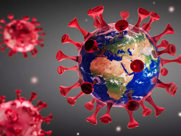

FEBRUARY 17 2019

Covid-19 Origin
On 30 December 2019, the Program for Monitoring Emerging Diseases notified the world about a pneumonia of unknown cause in Wuhan, China (1). Since then, scientists have made remarkable progress in understanding the causative agent, severe acute respiratory syndrome coronavirus 2 (SARS-CoV-2), its transmission, pathogenesis, and mitigation by vaccines, therapeutics, and non-pharmaceutical interventions. Yet more investigation is still needed to determine the origin of the pandemic. Theories of accidental release from a lab and zoonotic spillover both remain viable. Knowing how COVID-19 emerged is critical for informing global strategies to mitigate the risk of future outbreaks.
In May 2020, the World Health Assembly requested that the World Health Organization (WHO) director-general work closely with partners to determine the origins of SARS-CoV-2. In November, the Terms of Reference for a China–WHO joint study were released . The information, data, and samples for the study's first phase were collected and summarized by the Chinese half of the team; the rest of the team built on this analysis. Although there were no findings in clear support of either a natural spillover or a lab accident, the team assessed a zoonotic spillover from an intermediate host as “likely to very likely,” and a laboratory incident as “extremely unlikely”. Furthermore, the two theories were not given balanced consideration. Only 4 of the 313 pages of the report and its annexes addressed the possibility of a laboratory accident. Notably, WHO Director-General Tedros Ghebreyesus commented that the report's consideration of evidence supporting a laboratory accident was insufficient and offered to provide additional resources to fully evaluate the possibility.
MAY 17 2021

The SARS-CoV-2 virus, which causes COVID-19, stayed relatively stable through last fall. Now all of a sudden, many variants are being identified that appear to change how the virus behaves. How does a virus change, and why are these variants emerging so quickly now?
The variant of SARS-CoV-2 that originally arose in China and spread around the world is called D614G. It held sway throughout the spring and summer, and though minor changes enabled the tracking of different transmission routes, they all functioned in the same ways. Pharmaceutical companies, therefore, used D614G’s spike protein sequence to develop the vaccines that are in use today.
The emerging variant that has received the most attention and concern to date is known as B.1.1.7. First found in the U.K., B.1.1.7 is more efficiently transmitted than other variants identified so far. It carries 18 lineage-defining mutations, including one in the spike (S) gene of the virus known as N501Y that affects binding to the human ACE2 receptor. Data is still being compiled and analyzed, but early findings suggest it is also somewhat more virulent than D614G, causing severe disease in a higher percentage of patients. There is also good news, however, in that the first studies to come out indicate that the current vaccines fully protect against B.1.1.7, further increasing the pressure to vaccinate as many people as quickly as possible.
Less is known about the other two major variants on the radar: B.1.351, which first emerged in South Africa, and P1, which arose in Brazil and may be the cause of a highly concerning second wave of infection in the city of Manaus. B.1.351 has the same N501Y S gene mutation as the B.1.1.7 variant, and two more as well in key sites of the receptor binding domain of the spike protein. Furthermore, it may not be well recognized by the immune systems of people previously infected with D614G. Studies already show that vaccine reactivity is not as strong to B.1.351, but it should still be strong enough to be effective. More research is ongoing regarding both immune and vaccine protection against the variant.
Interestingly, in addition to many other lineage defining mutations, P.1 also has the N501Y mutation. Given that it spontaneously arose in three variants under investigation for enhanced transmissibility, N501Y likely provides a competitive advantage for the variants in which it’s found. Also of concern regarding P.1 is its emergence in Manaus, a region that previously underwent a massive surge of COVID-19—with infection rates of up to 75%, according to some estimates—implying that it may be able to re-infect people originally infected with a different variant. P.1 was not identified prior to December 2020, however, so its properties and potential for immune evasion are just now being studied.